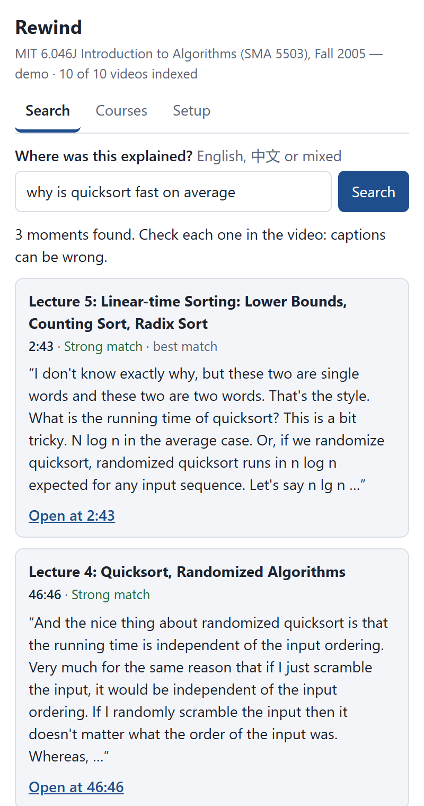
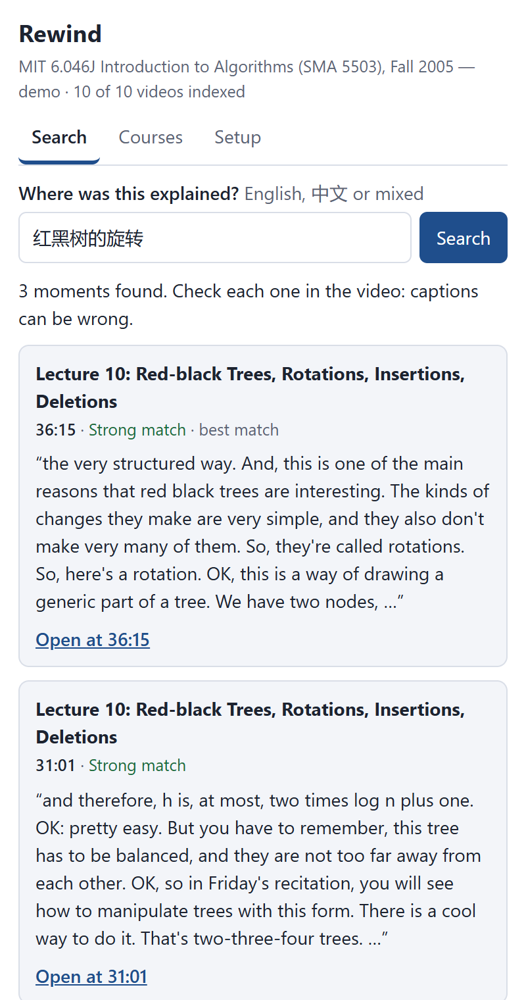
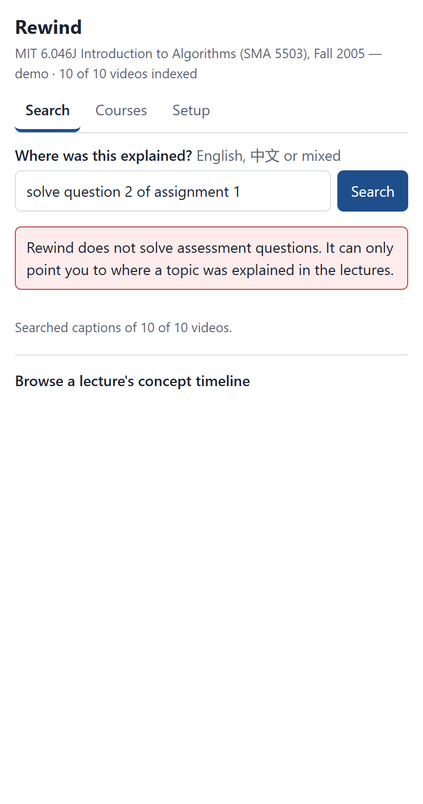
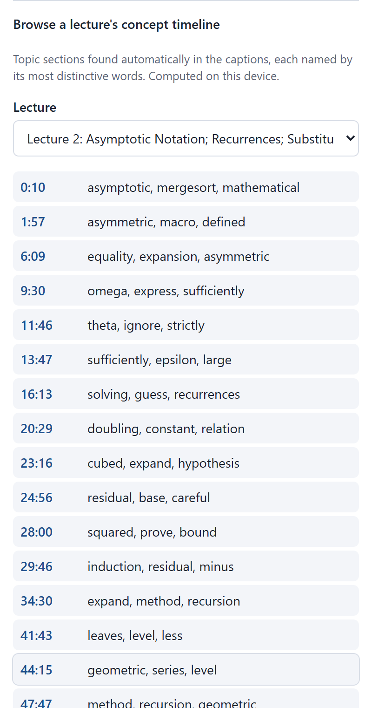
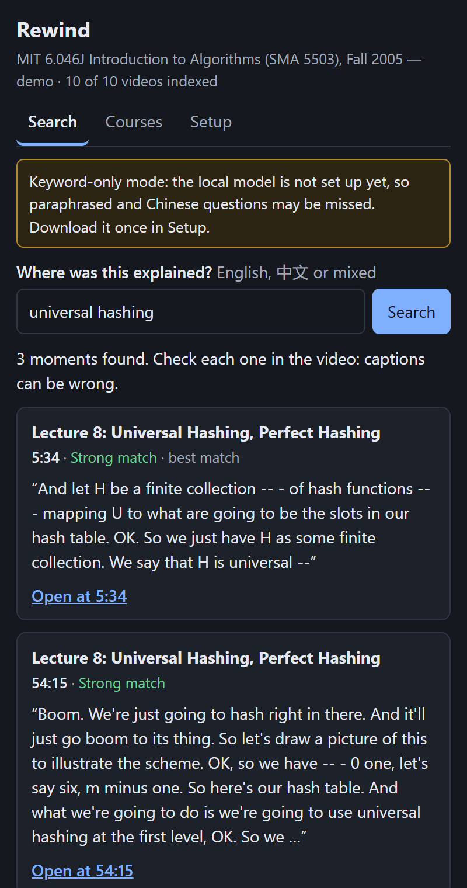
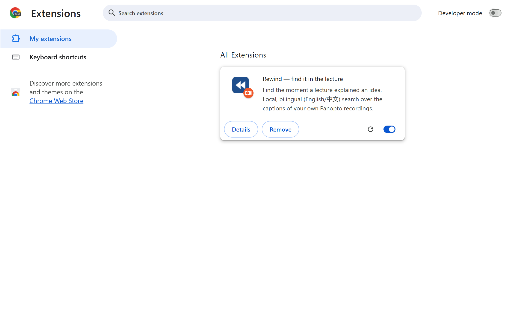

The problem
Panopto's keyword search works when you remember the lecturer's exact words. It misses two common cases:
- You remember the idea but not the wording — “why quicksort is fast on average” when the lecture said “expected running time”.
- You think in Chinese while the lecture is in English — “主定理怎么用”.
So students guess the week and scrub through hours of video. Rewind narrows that to up to three timestamped moments, with the caption excerpt so you can judge each one.
Rewind is for revising, catching up and finding earlier explanations. It is not for lecturers' analytics, not a way around access controls, and not a homework solver.

How it works
Caption-based, local first. The optional AI step only rewrites the question; local search always runs too.
Local and multilingual
A ~120 MB multilingual embedding model runs in the browser (WebAssembly). Captions, vectors and the model stay on your device; search works offline.
Honest answers
A practice-tuned threshold says “Not found” instead of guessing. Videos without captions are listed, and a folder with none says “index unavailable”.
Built for revision
Requests to solve assignment, quiz or exam questions are declined; at most Rewind links to where the topic was taught.
See it




Measured results
Demo corpus: lectures 1–10 of MIT 6.046J Introduction to Algorithms (Fall 2005, CC BY-NC-SA) — 12.8 hours, 3,054 caption windows. A frozen 50-question test set, annotated independently by two team members and reconciled, never used for tuning. A hit is a returned start within 30 s before an agreed explanation interval, up to its end. Thresholds were tuned only on a separate 15-question practice set.
| Measure (test set) | Rewind, local | Keyword baseline | Target | |
|---|---|---|---|---|
| Exact wording, Hit@3 | 11 / 12 | 10 / 12 | — | |
| Paraphrased, Hit@3 | 6 / 12 | 6 / 12 | ≥ 10 / 12, +20 pts | missed |
| Chinese / mixed, Hit@3 | 8 / 12 | 0 / 12 | ≥ 10 / 12, +20 pts | +67 pts, but 8/12 |
| All answerable, Hit@1 / Hit@3 | 15 / 25 of 36 | 8 / 16 of 36 | — | |
| Not covered → “Not found” | 3 / 8 | 5 / 8 | ≥ 7 / 8 | missed |
| Assessment requests refused | 6 / 6 | — | 6 / 6 | met |
| Median local retrieval time | 7 ms (Node) · 12–28 ms (browser) | — | < 2 s | met |
Local model: paraphrase-multilingual-MiniLM-L12-v2 (chosen on the practice set). The proposal's multilingual-e5-small is selectable: it scores 7/8 on “Not found” but only 1/12 on Chinese/mixed questions — the two models trade off. Full per-question tables are in the repository's eval/results/.
With the optional AI query rewriting reported separately
| Measure (same frozen test set) | Rewind + AI rewriting | Rewind, local |
|---|---|---|
| Exact wording, Hit@3 | 11 / 12 | 11 / 12 |
| Paraphrased, Hit@3 | 6 / 12 | 6 / 12 |
| Chinese / mixed, Hit@3 | 8 / 12 | 8 / 12 |
| All answerable, Hit@1 / Hit@3 | 19 / 25 of 36 | 15 / 25 of 36 |
| Not covered → “Not found” | 5 / 8 | 3 / 8 |
| Assessment requests refused (never sent to the API) | 6 / 6 | 6 / 6 |
| Median local retrieval time (Node) | 29 ms | 7 ms |
| Median API latency (separate, not in the local target) | 1105 ms | — |
| Rewriting model openrouter: openai/gpt-4o-mini; settings tuned on the practice set only; 0 API error(s) on the test set (those questions fell back to local search). | ||
API latency is reported on its own and is never counted in the local retrieval time. Rewriting is off by default and needs the student's own key.
Optional local Whisper transcription
For licensed media only (not part of the extension). On the first 10 minutes of the licensed MIT lecture 2 video, whisper-base.en running locally reached a 25.9% word error rate against MIT's published captions (which are lightly edited, so this overstates the true error), at 7.4× real time. Output is marked “Machine-transcribed; not verified”.
Install (no coding needed)
- Download
rewind-v0.2.0.zipfrom the releases page and unzip it. - Open
chrome://extensions(oredge://extensions) and switch on Developer mode. - Click Load unpacked and choose the unzipped
rewind-v0.2.0folder. - Click the Rewind icon. In Setup, click Download & check model (once, ~120 MB).
- Search the built-in demo, or open your Panopto course folder and click Index this course (ask your lecturer first).
No API key is needed for search or the demo.

What Rewind does not do
- Solve assignment, quiz or exam questions.
- Summarise whole lectures.
- Bypass Panopto access controls or handle passwords.
- Download or store audio/video (captions only).
- Collect analytics or share captions and indexes.
- Send anything to an AI service unless you turn that on, with your own key, after seeing exactly what would be sent.
Known limitations
- HKU Panopto not validated live. The adapter is tested against simulated responses; a live test needs lecturer approval. It uses undocumented Panopto endpoints that could change.
- Targets missed for paraphrased questions, Chinese/mixed (8/12) and “Not found” with the default model.
- Results are only as good as the captions; always check the moment in the video.
- Topic-start snapping was switched off by practice-set tuning: it did not improve hits.